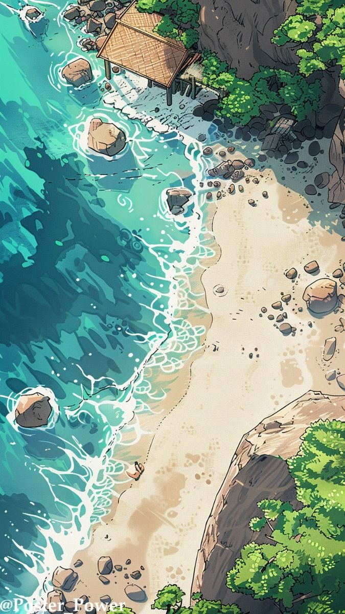

🏝️
Verde Haven
A lively coastal capital filled with markets, cafés, workshops, guilds, ships, and travelers.
A fractured archipelago of turquoise waters, jungle-covered cliffs, forgotten ruins, and the remnants of a civilization that once reached the heavens.

The Verdigris Isles are a fractured archipelago born from catastrophe, where the beauty of the present is built upon the remnants of a civilization that once reached the heavens.
During the Age of Ascension, Aetherite powered both surface civilizations and great Ascended Cities that drifted across the skies. Among them, the Citadel stood alone as the only true flying nation in existence.
That age ended with the Sundering. As Aetherite reserves failed across the world, the skyborne cities began to vanish from the heavens one by one. In the final collapse, the Citadel fell from the sky, its impact shattering the ancient continent into the scattered islands now known as the Verdigris Isles.
Its fall left behind the Crownscar—a vast ruin-field of broken Ascension-era structures and unstable relics. Centuries later, new kingdoms and settlements have risen from the wreckage, while guilds, explorers, and factions carve out lives among unstable wilderness and forgotten ruins.
The Isles endure as a frontier where history never truly ended. The Crownscar remains a dangerous focal point of relics and lost technology, and the past still shapes every corner of the present.
Its impact broke a continent apart. What remains is an archipelago of kingdoms, ruins, wilderness, and relics—where every expedition can uncover another piece of the world that came before.
From kingdoms and coastal cities to unstable wilderness and the vast Crownscar ruin-field, every region carries a piece of the world that survived the Sundering.
A lively coastal capital filled with markets, cafés, workshops, guilds, ships, and travelers.
The vast ruin-field created by the Citadel’s impact, filled with broken Ascension-era structures, unstable relics, and lost technology.
A vast living wilderness where nature feels aware, and the land itself seems to remember what came before.
A mist-drenched basin where ancient ruins and living ecosystems intertwine beneath endless falling water.
A shattered stretch of the Isles where civilization failed first- and something beneath it never stopped moving.
A slow-moving labyrinth of water and reeds where entire roads and ruins drift beneath the swamp’s surface.
The peoples of Verdigris have adapted to mountains, wetlands, forests, beaches, and bustling island cities.
Adaptable and widespread, humans can be found throughout nearly every settlement and region.
Aquatic race of the water with Oceanic, Tidal, and Miren variants.
Animal-born peoples descended from countless lineages, including Ferans and Kemori.
A Shifter based race with Wild forms from traditional to mythical and veiled variants.
Unique races and cultures can be developed around the environments and mysteries of the Isles.
Magic is part of the world itself, appearing in relics, ruins, materials, and places touched by the old civilization.
Aether exists throughout the world and forms the foundation of magical phenomena.
A crystalline residue created by magical activity that can stabilize flows and slowly release Aether.
A rare, irreplaceable crystal once used to power the Ascension Engines.
The modern Isles were born from the rise and collapse of the Age of Ascension—and from the final fall of the Citadel.
A rare crystal is discovered and civilization begins learning how to harness it.
Aetherite-powered technology transforms civilization.
Ascended Cities drift across the heavens, while the Citadel becomes the only true flying nation in existence.
Aetherite becomes increasingly scarce, threatening the systems built around it.
Aetherite reserves fail across the world. Skyborne cities vanish one by one, beginning the collapse later remembered as the Sundering.
The Citadel falls from the sky, shattering the ancient continent and creating the Crownscar, a vast field of broken Ascension-era structures and unstable relics.
New kingdoms and settlements rise from the wreckage. Guilds, explorers, and factions now make their lives among unstable wilderness, forgotten ruins, and the dangerous remnants of the old world.